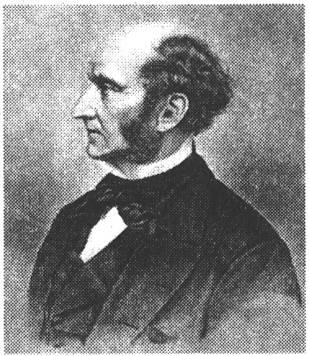
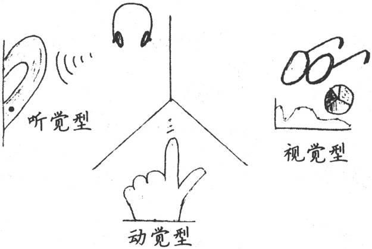
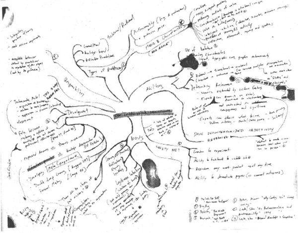
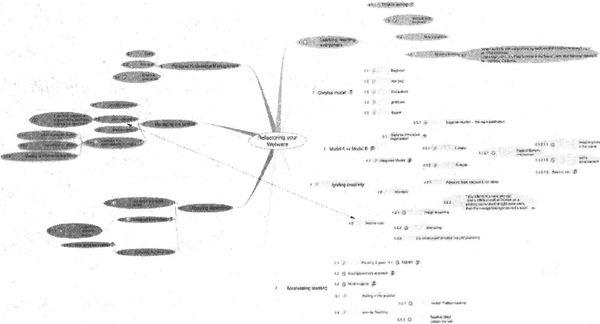
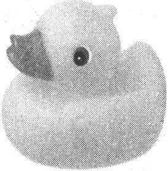

第6章 主动学习
大脑不是一个用于填充的容器，而是一束需要点燃的火焰。
——普卢塔赫［Mestrius Plutarchos（Plutarch）,
公元45—125］，希腊哲学家，阿波罗司祭
在当今技术和文化环境下，学习能力可能是成功的最重要因素。它决定了你是“大获全胜”还是“勉强通过”。
在本章中，我们将看一看学习的真正含义，了解为什么学习会突然变得如此重要，探索有助于主动学习的技术。首先，我们将研究一下如何随着时间的流逝来管理目标和制定学习计划，同时关注如何保持L型和R型平衡有效地协同工作。
以上述这些想法为基础，我们将探讨一些独特的技巧来帮助大家提升学习的能力，例如阅读技巧和思维导图等，同时也帮助大家更好地利用手头上的学习工具。我们还将看一看哪些学习方式和个性也会对学习造成影响。
我们可以提升你的学习能力，但首先要说一说学习是什么。
6.1 学习是什么……不是什么
虽然很多人力资源部门至今还没有意识到，但实际上，了解Java、Ruby、.NET或iPhone SDK并不是特别重要。总会有新技术或者现存技术的新版本需要学习。技术本身并不重要，持续学习才是最重要的。
历史上，曾经不是这样。中世纪的农民耕种土地的方式，几乎和自己的父辈一样，也和父辈的父辈一样。信息以口头的形式传播，并且一直延续到不久以前，一个人仍旧无需太多正规教育和培训也可以养活家庭。
但是随着信息时代的来临，一切开始改变。人们感觉变化的速度比以往任何时候都快，新技术、新文化规范、新法律挑战、新社会问题，都快速袭来。各种科学信息的主要内容都产生于最近十五年。在某些科学领域，可用信息的数量三年翻一番。最后一位无所不知的圣人很可能是英国哲学家约翰·斯图亚特·穆勒（John Stuart Mills）——他于1873年去世〔1〕。

我们有许多东西需要学习，我们必须持续学习。别无他法。但是“学习”这个词可能给人一些不舒服的感觉，总是让人想起年轻时埋头于黑板粉尘中的岁月，或参加公司组织的单调枯燥的“复印机”似的培训之类的低质量教育活动。
这不是它的全部意义所在。事实上，我们似乎往往误解了教育的真正含义。
教育（Education）来自于拉丁文educare，字面意思是“被引出”，即引导出某样东西。我发现一件非常有趣的事情，当我们想到教育时，通常并不考虑它这个词源的含义——从学习者那里引导出一些东西。
相反，更常见的看法是把教育当作学习者被动接受的事情——灌输，而不是引导。这种模型在公司培训中尤其流行，称之为羊浸式培训。
羊浸（现实中）是指把毫无防备的羊浸到一个大水箱里面做清洗，去除它们身上的寄生虫（见图6-1）。羊排成一队，你抓起一只浸到水箱里，让它感受一次强烈的、陌生的、中毒性的清洗经历。当然，药性会逐渐失效，所以过段时间你不得不对它们再次做清洗。
图6-1 羊浸：陌生的、中毒性的、暂时性的清洗
羊浸式培训遵循同样的模式。你召集起不知情的员工，在一个陌生的环境中通过密集的方式、三到五天的时间培训他们，和日常世界没有任何联系，然后宣布他们已经成为Java开发人员、.NET开发人员或者你所设想的任何头衔。当然，培训的效果会逐渐减弱，于是第二年你必需再来一次“进修”课程——另一次羊浸式培训。
“羊浸式”培训不起作用。
Sheep dip training doesn't work.
公司喜欢这种标准化的“羊浸式”培训。容易购买，便于安排时间，每个人随后被放进一个可爱的小盒子里：现在你拥有了一盒九片装的.NET开发人员。这就像是快餐鸡块。只有一个缺点：这种天真的办法不起作用。原因如下。
□ 学习不是强加于你的，而是需要你主动做的事情。
□ 仅仅掌握知识，而不去实践，没有用。
□ 随机的方法，没有目标和反馈，往往会导致随机的结果。
点燃你的火焰
一旦我们抓住要点，我们必须互相鼓励，彼此主动交流，利用记忆指导我们最初的想法，接受别人的说法，并将其作为一个起点，一个需要孕育和成长的种子。大脑不是一个需要灌输的容器，它应该被比作需要点燃的火焰——只需点燃——然后它便激发出人们的创造力，并逐渐使其产生对真理的渴望。
“假设有人原本去找他邻居要火，结果发现邻居那儿很暖和，于是他就继续呆在那边取暖。这就好比是，某人去向别人学习知识，却没有意识到他应该点燃自己的火焰、他自己的智慧，而只是很高兴地着迷于他人的演讲，老师的话只是触发了联想思维，就好比只是让他的两颊泛起红晕，只是让他四肢感到温暖，但是，虽然笼罩在智慧的温暖光茫下，他内心的阴冷昏暗却没有被驱散。”
——普卢塔赫，希腊历史学家、传记作家和评论家
正如普卢塔赫在本章开头文字中所说的，大脑不是一个用于灌输的容器而是一束需要点燃的火焰——你自己的火焰。这不是别人可以帮你做的（参见上述完整引文），而是一件你必须自己做的事情。
此外，令人惊讶的是，只是掌握知识的提纲并不会提高专业水平〔2〕。当然，掌握它非常有用，但是它对你的现实日常工作没有贡献很多。
这引起了一些有趣的问题。除了不停控诉羊浸式培训外，人们还严重怀疑大多数（甚至全部）技术认证项目。“知识体”显然并不重要。大脑构建的模型、为构建模型所提出的问题和你的日常经验和实践对你的业绩更加重要，它们才能提高你的竞争力和专长。仅仅掌握知识是不够的。
单纯密集、脱离情境的课堂教育最多只能给你正确的方向。你需要持续的目标，需要反馈以了解你的进展，需要更加主动全面的学习，而不是在令人窒息的教室里一年上一次课。
在本章剩余部分，我们将研究如何在现实中使学习更有效率。我们将看看如何利用手头上的最佳工具来更系统地着手学习，以提高学习能力。
首先，我们仔细看一看如何使用SMART目标和实用投资计划（Pragmatic Investment Plan）管理目标和计划。
6.2 瞄准SMART目标
如果你不知道去往何处，那么你必须多加小心，因为你很可能无法到达那里。
——尤吉·贝拉（Yogi Berra），前美国纽约扬基棒球队接球手
为了实现你的愿望——在职业生涯和个人生活中学习和成长，你需要设定一些目标。但是目标本身并不能保证你成功。
目标是很美好的事情，你可能会有许多目标：减肥、找到一个更好的工作、搬进一个更大的房子（或者更小的房子）、写本小说、学习演奏电吉他、编写一个超级Rails应用程序或者完全掌握Erlang。
但是很多目标都是一个模式——崇高的、泛泛的“我希望在某某方面更好”。减肥就是一个最好的例子。大多数人想要更苗条（特别是我们这些长时间坐在电脑前的人）。但“我想要苗条”并不是一个非常明确的目标（虽然可能是一个很好的愿景——长期、理想的状态）。
你体重需要减多少斤？你仰卧举重准备练多少公斤的？何时完成？你准备控制热量还是增加锻炼？类似地，说你想“学习Erlang”是不错，但是这到底是什么意思？想要学到什么程度？想用它来做什么？如何开始？
为了帮助你专注于自己的目标，能够更好地实现它，请允许我推荐一种风靡一时的来自于咨询领域的诀窍：使用SMART方法实现你的目标〔3〕。
在这里，SMART代表具体的、可度量的、可实现的、相关的和时间可控的（Specific, Measurable, Achievable, Relevant, and Time-boxed）。对于任何目标（减肥、炒老板鱿鱼、征服世界等），你都需要制定一个计划，定出一系列帮助你实现目标的任务（objective）。每一个任务都应该具有SMART特性。
目标任务使你更靠近目标。
Objectives move you to your goal.
我们往往对于这两个词目标（goal）和目标任务（objective）的意思有一些模糊。明确地说：目标是一种理想状态，通常是短期的，是你努力要达到的状态。目标任务是一种帮你接近目标的事物。但是不要在这上面太过计较，不同人使用这些词语稍有不同。
下面介绍SMART。
具体的
首先，一个目标任务应该是具体的。也就是说，只说“我想学习Erlang”是不够的。应该把事情具体化，例如“我想要用Erlang编写一个可以动态生成内容的Web服务器”。
可度量的
如何知道你何时完成？这一直是我最喜欢问的一个问题。为了努力实现目标任务，不管采用什么方法，你必须能够度量它。可度量的与具体的相辅相成。很难度量笼统抽象的事物，但是很容易度量具体和详细的事物，只要使用确切的数字即可。如果你认为无法度量自己的目标任务，那么很可能它还不够具体。
但是一定要采取稳扎稳打、步步为营的过程。你不能期望一周之内减掉五十英镑或者利用一个周末就学会一门全新的编程语言和它的全部函数库。度量你的目标任务，但是要采取增量进步的方法。
“写一部小说就像在黑夜里开车。你只能看到车灯照亮的部分，但是你却可以走完整个旅程。”
——E.L．多克托罗（E.L.Doctorow）
你不必看清你去往何处。不必看清你的目的地和沿途的一切。你只需要看清面前的一两米即可。
可实现的
我想要攀登K2峰，想在中东建立永久和平。
这一切不会发生。
至少，对我来说是这样。这些都是很好的目标，但是不现实。对我来说在当前的现实情况下无法实现。
一个你无法达到的目标不是目标，只是一种疯狂、吸食灵魂的自我挫败。有些事情对大多数人是不现实的——例如，参加奥运会比赛。有些是可能的，但是需要过度地付出时间和资源（比如，跑马拉松）。
因此，先确定目标是否合理。你也许可以在下周用新语言编写一段“Hello,World!”或者一个简单应用，但是你可能无法编写一个完整的Web应用框架和一个带有神经网络优化算法的用户界面构造器。
从你现在所处的情况着眼，让每一个目标都可实现。
相关的
这个目标真的与你有关吗——对你重要吗？你对此有热情吗？是在你控制之下的事情吗？
如果不是，这个目标就是不相关的。
目标需要相关，需要在你掌控之中。
时间可控的
这可能是目标最重要的一个特性。这意味着你需要设定一个最后期限。没有期限，目标会逐步衰退，永远被每天更紧急的事情所排挤。这样它永远都不会实现。
再强调一遍，稳扎稳打。采取循序渐进、比较细小的里程碑。当实现它们后，你会更有动力去实现下一个里程碑。
诀窍25
建立SMART任务实现你的目标。
这种方法帮助你从自己的角度（“我”）、从更积极的角度（“我要”）来明确目标，要么用一般现在时，要么给出明确的时间表述（“我会在xx时间之前完成zyzzy”）。
更大背景下的目标
在这里要向约翰·邓恩（John Donne）表示歉意〔4〕，没有任何一个目标是孤岛。目标必须在更大的背景下才有意义，可能包括以下范围：
□ 家庭
□ 事业
□ 财务
□ 社区
□ 环境
这扩展了可实现性和相关性的含义。在一周内减掉五斤在当时感觉是可实现的，但是从总体长期的健康角度看，对整个系统是不理智的。类似地，项目自始至终都需要加班才能完成目标，这或许是可实现的，但是整个开发团队和他们的家庭都要付出巨大代价，最后也会影响到公司业务本身〔5〕。
目标、任务和行动计划
你决定学习一些东西。你设定了一个目标。太好了，现在你准备如何实现这个目标？
尝试设定一些明确的小任务作为行动计划的一部分。我要按照目标指定一些小的（有时微小的）任务来创建行动计划以实现该目标。
当我学习弹钢琴时，我的老师为我设定了年度目标，并且每周给我安排特定的培训以确保我达到目标。现在，我自己学习时，也是这样做的。
当我想要学习一门新的编程语言时，我设定了一个编写一些小程序并请求审查的目标，这样我可以从我的实践和已经掌握这门语言的人那里学习。当我想学习提升写作能力的方法时，我决定参加写作研讨班，并每周都做专门的练习。
我不仅有每周任务来实现我的目标，我还会很高兴制定一些很小的任务甚至是五分钟的任务，以确保我可以达到目标。我的任务长度通常是一天。但是当我开始遇到麻烦时，我会创建五分钟或者十分钟的任务来开始。
“设定目标是第一步。下一步行动是创建小任务以帮助你每天或每隔一段时间都能达到某种程度。你创建的小任务越多，你就越容易看清自己与目标的距离。”
——Johanna Rothman
因此除了从自身的角度来寻找目标，还得考虑这些目标对更大背景下的工作和生活会有何影响。
实践单元
□ 在继续阅读本书之前，列举你最重要的三个目标。对每个目标提出一些实现步骤，确保每个步骤都符合SMART特性。
制定你的SMART目标列表……
6.3 建立一个务实的投资计划
现在你已经有了很好的目标，你需要一个计划来帮助实现它们。
早在《程序员修炼之道》［HT00］一书中，我们就建议大家把技术和才干看作一个知识投资组合。也就是说，你学习的技术和掌握的知识都变成你投资组合的一部分。就像任何投资一样——无论是金融还是艺术上的——都必须时刻进行管理。
很多年来，戴维，托马斯（Dave Thomas）和我一直把实用投资计划作为咨询实践的一部分，在这里我简单地介绍一下这些内容。实用投资计划基于一种非常简单但是有效的理念：像管理你的金融投资一样小心管理你的知识投资。
制定计划是实现任何目标的一种非常有效的步骤。我们大多数人常常陷入一种默认的学习日程表：等到有空时再花时间学习一门新语言或者新函数库。不幸的是，把你的学习活动流放到“空闲时间”去，这就等同于失败。
时间是无法创造和销毁的。时间只能分配。
Time can't be created or destroyed, only allocated.
很快你会发现，事实上你没有任何“空闲”时间。时间，就像壁橱空间或者磁盘空间，会很快被填满。“为……创造时间”的说法有点用词不当，时间是无法创造和销毁的。时间只能分配。主动安排你的学习，分配合适的时间，聪明地使用时间，你可以更具效率。
管理你的知识投资有很多要点：
□ 制定具体计划
□ 多样化
□ 主动投资
□ 定期投资
我们将依次研究一下实用投资计划（PIP）的每一步。
PIP：制定具体计划
制定计划就是巨大的进步。计划要具体，要运用SMART目标理念，要为不同时间段设计不同层次的目标。例如：
□ 现在（你下一步的行动）
□ 明年的目标
□ 五年后的目标
下一步行动目标类似于下载产品或者买本书。明年的目标可能是熟练程度的具体指标（能够使用某种语言或者工具做xyz）或者完成一个具体的项目。五年后的目标范围更广，包括发表会议演说或者写文章、写书等类似的事情。
时间范围是任意的，可以是现在、三个月和六个月。如果你工作在一个发展缓慢的行业里，也可以是现在、三年和十年。
记住艾森豪威尔将军对我们的建议：作计划比计划本身重要得多。正如我们马上将探讨的，计划是会变的，不过，与目标保持一致非常重要。
PIP：多样性
当选择投资领域时，你需要有意识地多样化，不要把所有的鸡蛋放在同一个篮子里。你需要很好地组合语言、环境、技术、行业和非技术领域（管理、公共演讲、人类学、音乐、艺术，等等）。
多样化也是要考虑风险和投资回报率的。任何你打算投资的领域在风险和回报率上都会有高有低。例如，学习一门流行技术如．NET风险非常低——许多领域的程序员都在用它，所以技术支持、出版的书籍、课程和就业机会等都很多。但是这也意味着投资回报率非常低——有很多领域的程序员在用它，所以就业岗位会有大量竞争。你学习它并不会变得很特别。
另一方面，也有高风险的技术。在Java刚刚诞生的年代，学习它就是一个高风险选择。它可能会流行，也可能不会。当Java如日中天的时候，那些冒风险的人收获颇丰。这就是一个高风险、高回报的选择。
如今，任何刚刚诞生的技术都是高风险和可能高回报的。它们可能走向末路——这就是风险。Erlang或者Haskell可能是下一代主要革命性语言，也许不是。Ruby可能是下一个Java，也许不是。iPhone也可能是下一代主导平台。
所有知识投资都有价值。
All knowledge investments have value.
知识投资和金融投资的一个主要区别是所有知识投资都有些价值。即使你从来不会在工作中使用某项技术，它也会影响你思考和解决问题的方式。因此，你学习的任何东西都有价值，只是有可能不是直接的、有物质回报的或和当前工作相关的价值。也许它会有助于开发R型思维或者改善R型到L型的切换。
谈到价值，请不要忘记时间和价值不是等同的。只是因为你在某事上花了大量时间并不意味着就能给你的知识投资增添价值。看一场球赛或者玩视频游戏可能是休闲娱乐，但是没有增加价值（除非你是一名四分卫运动员或者游戏开发人员）。
PIP：主动的，而不是被动的投资
另一个来自《程序员修炼之道》的主要话题是反馈。也就是说，你需要客观地按天来评估你的计划，如实地判断运行状况。
在金融领域，关键是积极投资。你不能只是守着你的资产。你必须主动地随时重新评估你的投资。它符合预期吗？从你开始投资以后，世界上有什么关键技术或者重要人物发生改变吗？
也许是时候增加一些你以前没有考虑过的新元素或者取消一些没有效益的计划了。你可能必须以最新发展的眼光重新修改目标或者实施步骤。
PIP：定期投资（成本平均法）
最后，你需要定期投资。在金融领域，你需要采用成本平均法（dollar-cost averaging）。这意味着如果你定期购买股票，有时你会付出很多，有时你会收益很多。但是长期来看，这些差异互相抵消，一般最后你都会获得较好的回报。
养成一种习惯。
Create a ritual.
知识投资也是一样。你需要定期投资最低限度的时间量。养成一种习惯，如果需要的话。躲到你的家庭办公室里去或者走进有无线网络的咖啡厅。并非每期学习都同样富有成效，但是只要定期安排学习，长期来看一定会成功。如果你一直在等待空闲时间或者等待灵感的突现，那么它永远都不会发生。
为了帮助投资收益最大化，在按指定时间坐下来之前，先计划好要做什么。如果在逃脱日常工作和家庭的压力后只是坐在黑屏前考虑下一步应该怎么做，那可是最令人沮丧的。
开始之前先做好计划，这样一旦开始就可以立即执行。
例如，我想学习FXRuby GUI工具包，在坐下来认真学习之前，我首先得有相关的书籍，下载需要的软件，想好用FXRuby编写什么东西。我也需要分配足够的时间研究它，只是周六下午或者周二晚上很可能是不够的。
诀窍26
对主动学习的投资做好计划。
实践单元
□ 写下现在、短期和长期的具体目标。
□ 增加两个新的学习领域，让你的知识投资变得多样化。
□ 每周设定时间来实施知识投资。
□ 设置提醒，让自己定期、阶段性地重新评估投资计划。哪些发生了改变，哪些已没有意义，现在你要做什么？
6.4 使用你的原生学习模式
既然计划已准备就绪，我们将开始讨论如何实施主动学习。因为每一个人的大脑关联方式不同，某些学习方式对你来说比其他的更有效，因此你需要弄清楚对你来说吸收新知识的最有效方式是什么。
历史上，很多教育家把学习者分为三大类：视觉型、听觉型和动觉型。
□ 视觉型学习者需要看到学习资料和老师。图片和图表对视觉型学习者都很有效，他们对肢体语言和面部表情也很敏感。
□ 听觉型学习者必须听到学习材料。讲座、研讨会和播客都很有效。他们对语气、语速和其他细节都很敏感。
□ 动觉型学习者通过活动和触摸来学习。他们需要亲身感受学习材料。特别是对运动、艺术和工艺等领域，你都需要通过动手来学习。
这三种类型非常普遍，你可以看到不同的模式适合不同的活动。但是考虑如何才能最好地学习是一个好的起点。
你喜欢阅读胜过研讨会或者播客吗？播客因为无法让你看到演讲者而让你烦恼吗？你播放教学视频但实际上并不看演讲者，是吗？

图6-2 视觉型学习者的必要图解
看一看图6-3每一列词组都与一种学习模式相关〔6〕。你如何描述一个学习问题？你会说“一片漆黑”，还是说“看起来很模糊”？这可能暗示你是一名视觉型学习者。如果你正努力“寻找突破口”并且不知道“如何前进”，也许你采用的是动觉型方法。听听别人都在使用哪些词语，这是一种强烈的暗示，表明他们喜欢相应的学习风格。
图6-3 代表性系统谓语项
多元智力
正如你所看到的，这些学习模式各异，而且并不存在一种方式适于所有人，因为我们的思维模式彼此都有所差异。这并不意味着视觉型学习者比听觉型学习者更聪明，反之亦然。
事实上，关于智力的精确定义长久以来都存在争议。一些研究人员认为智力是一种单一的、可度量的事物。另一些人强烈反对，他们认为智力的衡量标准存在文化的差异，传统的测试不能很好地预测其表现。这再一次表明，情境很重要。在辩论中，出现了两种基于认知情境的理论：罗伯特·斯滕伯格（Robert Sternberg）的三元理论和霍华德·加德纳（Howard Gardner）的多元智力理论。
斯滕伯格认为智力分为三部分，一部分是元级别的成分，负责总体管理思维过程；一部分是基于表现的成分，负责执行任务、建立关联等；最后一部分是知识获取成分，负责吸收新信息。每一部分都有自己的作用，彼此独立，各负其责。斯滕伯格指出，标准的IQ测试并不一定能衡量出智力的总分。他举例说那些测试得高分的人可能不善于在现实中解决问题，相反，那些善于解决问题的人在测试中反而很差。
加德纳也指出，智力有很多不同方面，一种单一的衡量标准是不够的。他把智力看作是多种不同能力和技术的综合体，定义了智力的七个方面，每个方面都表现不同的才能〔7〕。
身体-动觉
体育、舞蹈、DIY项目、木工、工艺、烹饪
语言
口头辩论、讲故事、阅读和写作
逻辑-数学
数学、数字、科学、分类学和几何
视觉-空间
使用图表或图解，素描、绘画和图像操作
音乐
演奏、识别声音、节奏、模式，记忆标语和诗文
人际
感情共鸣，感觉、意图和他人的激励
自我认知
自我反省，了解内心世界、梦和与他人的关系
后来其他研究人员还提出了别的智力因素，但是即使是按照上述这套最初的理论，你也会开始意识到一些有趣的能力。例如，对于音乐因素来说，除了明显的音乐才能之外，还包括识别歌曲以及对歌词、标语、诗文和类似材料的高效记忆。
每一个人都在这些智力因素的组合方式上表现各不相同。请注意某些才能更适合L型或者R型。
但是不要以加德纳的分类为借口。当相关的任务完成不好时，人们很轻易就会说出“我没有太多人际智力”或者使用常见的“我不擅长数学”为借口。这实际上意味着，既然相关的活动对你来说比较困难，你就需要做出更多努力。
如何才能学得最好？
How do you learn best?
像加德纳这样的分类有利于指出智力的所有不同方面——你可能会认识到自己的另一面，而这是你以前没有意识到的。很重要的一点是，你会发现这些差异意味着某些学习方式对你来说更有效。同时这些差异不是一成不变的，例如，你可能发现，通过实践本书提到的技巧，适合你的各种不同的学习方式的效力也会发生改变。
性格类型
如果使用google搜索，你会发现各种在线调查和测验可以确定你是何种类型的学习者（或者至少确定你有何种倾向）。你可以发现自己到底是积极学习者还是反思学习者，视觉型还是语言型，等等。事实上，一些测试学习类型的方法结合了你的性格，使用了荣格提出的、后来由MBTI推广的性格分类模型（参见5.3节）。
性格也会影响学习类型。内向的人可能会对会议上的即兴演讲感觉不舒服。外向型的人在学习新技术时可能会和团队讨论。
超越自我
性格不是命中注定。
Type is not destiny.
请记住这些智力和性格的分类只表示一种可能性——不是硬性的规定或判决。如果你做了MBTI分类测试，实际上你的MBTI类型代表的是你的默认设置。你随时可以选择不同的行为方式。但是当没有人注意时（特别是你自己没有注意时），这些就是你的默认行为。
诀窍27
发现你的最佳学习方式。
尝试不同的学习模式。为有助于学习一个新主题，尝试不同方法。如果通常不听播客或者讲座，那么除了惯用的阅读或者实践之外，也请尝试一下听听讲讲座或播客。
实践单元
□ 想想你最强的智力因素：哪些因素你在工作中用得最多？你的最强因素和你的工作非常匹配吗？还是不匹配？
□ 哪些因素你用于爱好？你是否没有很好地利用自己某项很强的智力因素？你能找到方法来应用它吗？
□ 如果存在不匹配，你如何弥补呢？如果你是视觉型学习者，你能开始在自己的学习中利用视觉辅助工具吗？如果是动觉型，使用道具会有所帮助吗？
6.5 一起工作，一起学习
研究表明同伴学习小组非常有用。学习主题是由参与者选择的，因此与日常工作直接相关。学习过程可以灵活、方便地根据你的日程表来安排，而且无需昂贵的旅行和资料〔8〕。学习小组是代替陌生、中毒性的羊浸式学习的伟大方法。
自从《程序员修炼之道》一书出版以来，我们了解到人们会在公司内部的阅读和学习小组中使用它。这是一本起步的好书，因为它没有专门针对任何特定的技术、语言和方法。你可以选择一本通用的书或者选择特别具体和有针对性的书。
阅读小组无毒。
Reading groups are nontoaic.
成人教育的关键
成人学习者和儿童或大学生不同。马尔科姆·诺尔斯（Malcolm Knowles）在The Adult Learner: a Neglected Species［Kno90］一书中指出了成人的学习特点和学习环境。
□ 如果学习能够满足成年人的兴趣和需求，他们就会主动学习。
□ 学习的对象应该是与现实生活相关，而不是孤立的个体。
□ 学习者主要使用经验分析法。
□ 成年人需要自我引导，老师应该帮助他们互相交流。
□ 老师必须允许风格、时间、地点和节奏的差异。
请注意这些想法非常适合你与同事组成的学习／阅读小组。就其性质而言，阅读小组符合成人学习者的需求和目标。
你有多种选择来设立学习小组，既可以是非正式的也可以是正式的。对于非正式的，可以是大家共同选定阅读一本书，然后轮流让成员在wiki或者邮件列表里总结每章内容，或者聚在一起边吃午饭边讨论。
对于正式的，你可以采取下面几项谨慎的步骤〔9〕。
寻求建议
看看大家的想法。获取足够的提议，每个提议都要有拥护者。寻求广泛的主题：技术方面的、软技能方面的，包括还没有使用的技术或者希望使用的技术。
选择一项提议和一个负责人
需要有人领导这个学习小组就某个专题进行学习。他们不需要擅长这个主题，但是必须对这个主题和学习充满热情。
买书
公司为所有参与者买书。大多数出版商（包括Pragmatic Bookshelf）提供团购折扣，所以请务必注意。
安排午餐会议
公司提供午餐或者大家自带午餐。应该用自己个人的时间来完成阅读，不过要安排午饭会议，准备一顿九十分钟的超长午餐。
在会议上，安排前半个小时吃饭、社交和非正式的交谈。然后，正式开会。请一个人总结大家读完的一章。按不同主题或章节轮流总结，不要总是一个人。然后开始讨论这章：提出问题，提供意见。要想寻求灵感，你可以参考每章结尾的问题、任何明确的学习指导问题或者像本书里的实践单元。
诀窍28
组织学习小组学习和辅导。
尽量保持每一个小组不超过八到十个人。如果团队很大，可以将其分成多个更小的组织来讨论。
除了对学习本身有惊人的帮助，这还是增强团队凝聚力的一个好办法。大家一起学习，也可以互相学习，而且学得更有效。
6.6 使用增强的学习法
既然已经建立了主动学习的良好框架，我们现在需要看看学习本身。在本章剩余部分，我们将研究一些具体方法来帮助你更快更好地学习。以下是主要提纲。
□ 主动阅读和总结书面材料的更好方式
□ 使用思维导图探索和发现模式和关系
□ 以教代学
单独使用上述任一种方法本身就能让人受益匪浅。合在一起，它们更可以使你成为一台高效的学习机器。但是每一个人都是不同的，每个人的最佳学习方法也是不同的。因此，你可能发现某些方法最为有效——请记住，没有放之四海而皆准的办法。
6.7 使用SQ3R法主动阅读
告诉你一个不幸的事实：书面的指令通常被认为是最无效的。对于你想要训练或者教育的大脑和身体，它们当中有很多部分不是处理语言的。我们在关于大脑的讨论中已经得知，处理语言的部分相对较小。除此以外，大脑整个剩余部分都不懂语言。
书面的指令通常被认为是最无效的。
Written instruction is the least efficient.
因此，似乎我们最善于从观察中学习。我们都是天生的模仿者，最佳且最有效的学习方式是观察和模仿别人，我们会在稍后再次探讨这一现象，但是与此同时，我们有一个相当棘手的问题。
此时此刻，你正在阅读本书。一生中，你所读的书可能比听的讲座多很多。但是相比于任何由经验式的学习方法，阅读是一种效率最低的学习方法。
使阅读更有效的办法是更主动一点，而不是随便捡起一本书来开始埋头苦读。广为使用的好方法为数不少，我们来仔细研究其中一个，但是与其功效类似的方法还有很多。
这项学习一本书或其他印刷品的方法称为SQ3R，是该方法具体步骤的首字母缩写〔10〕。
□ 调查（Survey）：扫描目录和每章总结，得出总体看法。
□ 问题（Question）：记录所有问题。
□ 阅读（Read）：阅读全部内容。
□ 复述（Recite）：总结，做笔记，用自己的话来描述。
□ 回顾（Review）：重读，扩展笔记，与同事讨论。
这项技术的第一个有用方面是主动性。人们不再是随机地捡起一本书阅读，而不管记住或者没有记住多少内容。这项技术是一种更周到、更自觉、更有意识的方法。
详细过程
首先，带着问题审视你要看的书。看一看目录、各章介绍和总结，以及作者留给你的其他标志性内容。你需要在深入细节之前得到一个总体印象。
接下来，写下你想要弄明白的所有问题。这项技术如何解决这个问题？我是要学习如何使用这项技术吗？或者这项技术实际是指向另一个源头吗？把各章节的标题改写成问题，这些都是你期望这本书回答的问题。
现在你可以阅读这本书的全部内容了。如果可以的话，随身携带这本书，这样你可以在等待会议或约会、在火车上或者飞机上或者任何空闲的时候阅读。在困难的部分放慢速度，如果内容不是很清楚就重新阅读。
随着阅读深入，复述、回想和使用你自己的语言改写书本最重要的部分。要点是什么？对想法做一些初步的记录。创造一些缩写来帮助你记忆等。真正感受这些信息，利用你的R型、通感〔11〕构建等等。这个主题作为一部电影看起来像什么？卡通吗？
最后，回顾这本书。如有必要，重新阅读一些部分，当你再次发现一些有趣的内容时，可以扩展笔记（我们会在6.8节中看到按照这种方式记笔记的一种好方法）。
具体例子
例如，假设我正在阅读一本有关新编程语言D、Erlang或者Ruby的书。我翻阅目录，看看书的主要内容。噢，一些语法的介绍，几个简单项目，还有我目前不感兴趣的高级特性。嗯，它是单继承、多继承还是混合的？我想知道迭代器在该语言中是怎么用的？如何创建和管理包或者模块？运行时性能如何？接下来看书——如果可能的话多看点，如果时间紧的话少看点。
接下来是复述，即改写。自欺欺人并不难，你可以认为“是的，我能记住全部”。但是这并不容易（参见下栏）。
测试驱动学习法
重复阅读同样的材料或者重复学习相同的笔记，不会有助于你记住材料。尝试测试吧。
通过重复回顾材料来不断测试你自己，这种方法有效得多*。主动、反复地尝试回顾巩固了学习，增强了大脑的内部连接。仅仅依靠反复的输入，你不会有什么效果。尝试用你正在学习的新语言编写一个程序——你需要回顾关键信息才能完成。尝试向同事解释新方法的关键部分。持续回顾——测试你的知识。你可以把这看作是测试驱动学习。当测试自己时，可以利用间隔效用。
短时间内学习大量信息不是很有效率。我们对事物的遗忘趋势往往会遵循一种指数曲线，因此，间隔你的测试时间可以显著增强记忆。例如，你可以按照2-2-2-6的模式设定测试时间表：在两小时、两天、两周和六个月之后重新测试。
但是，这不是使用时间的最有效方法，特别是当有大量的材料时。一些事实和想法可能更容易记忆，另一些则需要更多努力。为每一个需要记忆的事实跟踪一个记忆衰减曲线太困难了，不能手工完成。但是，我们可以利用计算机。
彼得·沃兹尼亚克（Piotr Wozniak）开发了一种利用间隔效用的算法，应用在商业产品SuperMemo上（开源实现参见http://www.mnemo syne-proj.org/）。它是一种改装的flashcard项目，跟踪你的记忆表现，并根据每个项目的记忆衰减曲线安排重新测试。
这是利用大脑缓存和归档算法的伟大方式。
努力使用书中的信息：尝试用这门语言从最基础编写一个程序（要与书中的简单例子和练习不同）。现在对这门语言又有何种感觉？是时候回顾那个章节了。我会做一些笔记，我知道自己肯定会再次查阅，也可能在关键表格或者图上做一些注释，或在白板上快速涂鸦以帮我记忆这些内容。现在应该与朋友或者邮件列表里的人讨论了。
诀窍29
主动阅读。
整个事件流听起来很熟悉，是吗？我想它清楚地反映了R型到L型的转换。就像攀岩体验一样，首先是一种全盘、浅显但是广泛的调查，然后转换到传统的L型活动，扩大多重感观的参与（讨论、笔记、图片、隐喻等）。
也许你一直做的“常规”笔记非常沉闷。幸运的是，有一项优秀的技术可以帮助你，将那种常规的、令人厌倦的记笔记方式和探索性的思维方式提升到一个崭新的水平。
你需要的不仅仅是笔记，你需要思维导图。
6.8 使用思维导图
思维导图是一种图表，显示各个主题和它们之间的关系。建立思维导图是一种增强创造力和生产力的技术，其应用很广泛。它由英国作家托尼·布赞（Tony Buzan）在《思维导图》（The Mind Map Book: How to Use Radiant Thinking to Maximize Your Brain's Untapped Potential）［BB96］一书中首创，而类似风格的图表从至少三世纪就开始出现〔12〕。
现代思维导图是一种二维的、有机的整体大纲。建立思维导图的规则是松散的，但是大致步骤如下。
1．准备一张很大的无格白纸。
2．在纸中间写上标题，用圆圈框起来。
3．对于每一个主要的子标题，从圆圈引出线，添加标题。
4．重复执行其他层次的节点。
5．对于其他的单独事实或者想法，从合适的标题引出线，写上标题。
所有节点都应该是相互连接的（没有自由的节点），同时该图表应该是层次结构的，只有一个根节点，但是通常有一点限制条件。你需要使用颜色、符号和其他有意义的东西标记不同的事物。但是尝试使用文字来进行解释，起不到这种效果。例如，观察图6-3。这张图显示了我初次学习德雷福斯模型时的思维导图。为适应页面大小，这张图被大大缩小了，因此不必注意标签里的文字——只是感受一下结构和流程。
传统的大纲存在一些微妙和麻烦的限制。对我来说，规规矩矩的线性大纲往往阻碍了创造的冲动，这种大纲的本质是一种层次结构，而这种分层往往会强化它们各自的结构。因此，一个伟大的想法如果不适合这种结构可能就会被舍弃。

图6-3 德雷福斯模型的思维导图草稿——杂乱但系统
当建立思维导图时，避免顺时针地填写元素——这只是一种绕圈形式的大纲〔13〕。
当我做有关该主题的讲座时，我通常会在这时候停下来，询问听众是否听说过或者使用过思维导图，结果是可预见的。
在美国，可能仅有百分之三或四的听众只是听说过思维导图。但是在欧洲，我得到的反馈相反，几乎每一位听众都使用过思维导图。人们告诉我这是他们小学教育的常规内容，就像在美国写一个提纲或者主题句一样。
虽然思维导图听起来非常基本、初级，但它有一些微妙的属性。它利用了你的眼睛扫描和阅读一张纸的方式。通过一种线性文字或者大纲所不能的方式，空间提示可以向你传达信息，因为颜色和符号的使用增加了表达的丰富性。当你打算添加一条新信息、一个新想法或者领悟到思维导图时，你要面对这样一个问题：这属于哪一块？你必须评估想法之间的关系，不仅仅是想法本身，这是一项非常具有启迪作用的活动。
强调空间的线索和关系。
Emphasize spatial cueing and relationships.
在你开始填写图表时，总是有足够的空间容纳更多的信息。你可以写得小一点（不需要字体选择框），同时你可以把一些信息挤到页边缘，然后用线连起来。你可以用横跨页的长箭头连接你认为需要连接的标签。
然后，一旦你从思维导图中学到东西，就在一张白纸上再画一遍——可能会修正一些位置，反映出你学到的东西。重画和从记忆中重新获取信息有助于增强连接，还可能在学习过程中有更多的领悟。
尝试使用不同的纸。美术纸比办公用纸可能更粗糙，有一种不同的触觉感受。记号笔、彩色铅笔和钢笔也都会给你不同的感觉。特别是颜色有一种启发作用。
提升思维导图
非特定的、非目标导向的“玩”（playing）信息是一种获取洞察力、看清隐藏关系的好办法。这种精神随意性恰好是促进R型工作的条件。但是千万不要过于强迫，因为这是非目标导向的。你需要放开一点，让答案主动上门来找你，而不是有意识地努力强迫它出来。只是玩一玩。
你很快会意识到图形的提升不是任意的。它们开始有意义。它们有助于激发思维和意义，而不是单纯的修饰。虽然你只是问自己“我能够添加什么信息到这种关系或者对象里”，但是你实际上是在要求绘画方面，即R型来完成提升。
非目标导向的“玩”。
Use non-goal-oriented“play."
虽然很多不错的公司都制作了思维导图软件〔14〕，但我认为软件工具只是更有利于协作和文档——而不是头脑风暴、学习和探索性思维。对于这些活动，我建议手动绘制思维导图。
为什么手动绘图很重要？见图6-4。这是一个我在Mac上建立的漂亮的、五颜六色的思维导图。这是本书的早期形式。每一个节点连接着一个网站、PDF研究论文、笔记片段或者其他重要资料。虽然很酷（非常方便回顾和查找研究资料），但这与手动就是不一样。
写作与阅读一样重要。
Writing is as important as reading.
无论是笔记还是思维导图，手写是关键。例如，听讲座时做笔记真的能帮助我记忆讲座内容——即使我再也没有看过这些笔记。

图6-4 软件工具思维导图一精练、关联，但有效吗
我发现最有效的办法是在听讲时先草草地记笔记（这可以使你在提取要点的同时不至于分心），然后把这些草稿笔记整理成正式笔记。即使我从没有再看过这些笔记，但是整理草稿笔记的过程是最有价值的。对思维导图，你也可以做同样的事情——先做一个粗糙的，然后根据需要重画。重画有助于在大脑中形成更多关联。
诀窍30
同时用R型和L型做笔记。
试一试
这里有一个练习。
1．写一个对你很重要的四到五项条目的无序列表。
2．在纸上用钢笔或铅笔绘制一个针对以上各项的思维导图。
3．等待一天。
4．现在用十五到二十分钟修饰这张图。做些点缀，增加粗线，使用颜色，增加点涂鸦、图片，在角落添加几个卡通形象，随便什么都可以。
5．一周之后回顾这幅思维导图。有什么意外发现吗？
通过SQ3R法使用思维导图
当你不完全确定你会发现什么时，思维导图是最有效的。
读书时做笔记是一个例子。下一次读书时（也许尝试SQ3R），请用思维导图的方式做笔记。你会对主题有一个大体上的认识，但是随着具体细节的出现，你开始看清哪些条目是互相联系的，它们是如何联系的，导图会不断填充，理解的思路就会出现。
然后，当你进入SQ3R的回顾阶段时，根据你的理解重画和修改思维导图。你能够利用思维导图更新你的记忆，这种方法比其他笔记形式或者重新看书要有效得多。
探索性的思维导图
同样，如果你在解决一个问题却不知道该如何做，思维导图可以帮助你。比如在设计一个新类或系统、调试bug、评估若干商业产品或开源实现、买新车、写小说或摇滚音乐剧，都可以尝试使用思维导图。
使用词语作为标题，你不需要长篇大论，甚至连一句完整的句子也不必有。利用图标代表关键想法。重要的连线使用粗体，不确定的关联使用细长线。写上你目前知道的一切，即使你不知道它适合归在哪里。
非常快速地做第一次迭代——就像一次印象派素描。这会有利于摆脱L型的统治，让R型自由地接触导图。
启动思维导图，随身携带，特别在你当前没有大量信息添加时（正如我们稍后会看到的，只是填写相关的想法也会帮助很大）。随时填写想到的事实和主意。不必一蹴而就。根据需要重新绘制，但不是急着这样做。让它乱一会。毕竟，你是在探索一个话题。
使用思维导图理清思路。
Use a mind map to help clarify.
甚至你都不知道主题是什么，思维导图也可以有效地帮助你收集广泛的想法。杰瑞德·理查森（Jared Richardson）告诉我们说：“我在写作或者编程时使用思维导图改变和关注我自己。它强迫我后退一步，清空想法，然后告诉我如何前进。”
我也有类似的经历，如果我陷入没有明确思路的混沌状态，使用思维导图可以为我理清思路、指引方向。
协作的思维导图
你可以把这项技术扩展到小组或者整个团队中。不再是在纸上画图，而是每个人都面对一张贴满了即时贴的白板，如图6-5所示〔15〕。
图6-5 进行中的同主题归类
每个人都有一些即时贴和一支记号笔。大家做一番头脑风暴，在即时贴上写下想法，把它粘到白板上。过一会，你就可以开始收集相同的主题，并把相关的即时贴整理到一起。
因为即时贴便于摘掉和重新使用，你可以根据需要重新摆放即时贴。
一旦上述工作都完成了，你就可以为每组即时贴画个圆圈，各组之间用线关联。瞧，现在你得到了一张思维导图。给这块白板拍张照片，用电子邮件发给大家〔16〕。
实践单元
□ 为下一本你要读的书制作思维导图。
□ 为你的职业生涯和人生规划或者是下次休假制作思维导图。
□ 尝试颜色的功效：使用彩色铅笔，通过颜色对个别节点赋予特定含义。
□ 尝试图形注释：随意涂鸦你的思维导图，看看会有什么发生。
□ 保持迭代。在你认为自己“做完了”之后，回顾并增加一点新东西，重新开始。
6.9 利用文档的真正力量
敏捷软件开发的一个信条是避免不必要的文档。也就是说，如果文档没有提供价值，就不要记录。为了文档而写文档是浪费时间。
这是因为我们通常要花费大量时间准备低层次的、详细的设计文档，而它们很快就会过时。更糟糕的是，这些文档通常没有读者——它们没有用于任何有用的目的，只是表明团队“生成了文档”。因为这非常浪费时间，所以敏捷团队非常认真地审查是否需要生成文档，以确保文档的确有用。
很多人把这种做法理解成“敏捷开发人员不写文档”，这是错误的。敏捷开发人员的确创建一些文档，但是他们使用务实的过滤方法保证对文档的投资是真正值得的。它必须有价值。
这让我们想到一个问题：对写作者来说文档的价值是什么？创建低层次的设计文档，简单地反映代码的细节（几乎很快就会过时）对任何人都没有意义。但是其他形式的文档可能是有价值的，即使没有明确的读者。
路易斯·巴斯德（Louis Pasteur）曾经说过“机会只青睐有准备的人”，核磁共振成像和脑电图测试证实了这一点。一项最近的研究〔17〕表明，将注意力进行内源性的聚焦，这样的心理准备可以促进灵感的闪现，即使这种准备发生时还远没有面对任何具体问题。
机遇总是青睐有准备的人。
Chance favors the prepared mind.
将注意力调整为内源性的，就像你在使用思维导图时那样，在大脑中构建一个有利于灵光闪现的状态。因此，写文档的过程比文档本身更重要。
飞行员Dierk Koenig也是我的一位读者。他曾给我发来了这样一则故事。
我在准备飞行例行动作时发现了这个现象。飞行动作的流程在飞行之前都会使用Aresti标记法提前计划和绘制好。在飞行过程中，我们应该记好这个流程，但是驾驶室会贴上有关流程的卡片，以防大脑失灵。
虽然有Visio插件帮助人们建立非常漂亮的卡片，但是我更喜欢手工制作，采用一种老套的方式。有一次我在机场制作卡片，学校的负责人推了推一名学生，指着我说：“快看，太酷了。”我不知道她为何这样想。我只是觉得自己在花费大量时间制作卡片。
但是很显然我也在“做思想准备”。
——Dierk Koenig
正如我前面所提到的（6.8节），做笔记非常重要，即使你从来不阅读。在Dierk的例子中似乎有很多元素在起作用。
□ 手动制作增强了R型处理。
□ 笔记/卡片的主动创建有利于为以后的活动做思想准备。
□ 可视化流程和预演可以让大脑模拟（我们会在7.6节简要了解更多内容）。
诀窍31
写文档的过程比文档本身更重要。
你不必使用索引卡或者写字的纸，餐巾的背面就不错，或者一个大白板。
或许你想要花一个小时来制作播客或者视频。你可能发现这对你来说更具效力，对信息的使用者来说更迷人。它也比花一周创建冗长的文档更划算。
制作视频。
Make a screencast.
视频对传递动态信息非常有效：向用户展示如何使用你的软件执行任务，或者通过一套复杂的流程来构建对象的生命周期。这是一种既划算又愉快的方式，它让很多人（甚至远方的人）都想踮起脚尖看看你在讲些什么。
把它看做自学的另一种方式。当然，另一种学习的技术在于教别人。
6.10 以教代学
学习某项事物的最简单和有效的方法是尝试教别人。教在这里并不一定意味着攥着粉笔走向教室，它有很多种方式。你可以从简单的“和橡皮鸭聊天”开始。在《程序员修炼之道》一书中，我们描述了下面的场景。
和橡皮鸭聊天。
Talk to the duck.
你正在解决一个困难的bug，已经花了大量的时间，最后期限迫在眉睫。因此，你找一位同事帮忙。他们来到你的屏幕前，你开始解释怎么回事，是什么地方出错了。还没说多少，你的大脑中灵光一现，“啊！”地叫了起来，你找到了bug。一头雾水的同事，一句话都还没说，就摇摇头走了。为了省掉你的同事过来，我们建议你在桌子上摆一只黄色橡皮鸭作替身，当你遇到问题时，先和它聊聊。
另一种有用的办法是尝试向一个孩子或者你所在领域之外的人解释你的东西。诀窍就是用他们能理解的话语进行解释。这是一个向你的Edna大婶解释你的工作的好机会，也是一个练习从听众角度观察问题并创建隐喻的好机会，这些隐喻有助于解释、阐明你的工作。你可能会在这个过程中惊奇地发现一些新的收获和领悟。

最后，你可以尝试教一个更大、更相关的听众。在本地用户组会议上发言，或者向简讯和杂志投稿。没有什么比一大堆聪明人给你一字一句地挑毛病、帮你理清思路更有效果。这是对一般而言的教学的真正回报，它澄清了你的理解，揭示了你的很多潜在假设。
请记住医学院的口头禅：
诀窍32
观察，实践，教学。
正如我之前所说的，持续的获取对学习非常有用。在准备教授时，你不得不“回顾”，认真思考问题的答案，这都有助于增强神经关联。
6.11 付诸实践
到现在为止，我们已经研究了德雷福斯模型，并了解了如何成为一名专家。我已经展示了一些大脑的奇迹，包括可能未充分利用的另一脑半球。
本章中，我们仔细探讨了什么是学习，什么不是。我们使用SMART方法设定实用投资计划，还有具体的技术，包括阅读技巧、思维导图和以教代学。
但是学习只是第一步，下一步我们需要研究如何把学习付诸实践，了解获取经验的最佳方法。我们会在下一章介绍。
同时，是时候开始实践了——离开封闭的房间，与现实世界交流，推动你的个人学习。
实践单元
□ 选择一个新主题，尝试教给一个同事或亲戚。你从教学中学到了什么？从准备中又学到了什么？
□ 如果你还没有参与一个本地用户组，现在就开始积极参与。Java、Ruby和Linux用户组有很多，但是你也会看到Delphi、敏捷或极限开发、OOP、特定厂商产品等用户组。
□ 认真听取发言。做一个相关的思维导图。你会添加什么？你会有所不同吗？基于你的思维导图写一个用户组的评论文章。
□ 联系组织者，在下一次会议上要求发言。
□ 如果没有适合你的用户组，把你的文章写到杂志或者博客上。
注 释
〔1〕 引自Influence: Science and Practice［Cia01］。
〔2〕 参见Klemp,G.O.“Three Factors of Success”in Relating Work and Education［VF77］、Eraut,M.“Identifying the Knowledge which Underpins Performance”in Knowledge及Competence: Current Issues in Education and Training［BW90］。
〔3〕 最初来源于《管理实践》（The Practice of Management）［Dru54］，随后流行起来。
〔4〕 作者在这里改动了诗人约翰·邓恩于1623年所作的《沉思录》第十七篇（Meditation XVII）中的一句话：“没有人是孤岛。”——编者注
〔5〕 感谢Paul Oakes的建议。
〔6〕 感谢Bobby G.Bodenhamer允许使用这一表格，参见http://www.neurosemantics.com。
〔7〕 参见《智能的结构》（Frames of Mind: The Theory of Multiple Intelligences）［Gar93］。
〔8〕 参见Improving Quality and Productivity in Training: A New Model for the High-Tech Learning Environment［RW98］。
〔9〕 参见Knowledge Hydrant: A Pattern Language for Study Groups［Ker99］。
〔10〕 参见Effective Study［Rob70］。
〔11〕 指跨感官的，例如，想象数字是多彩的，单词有一种味道，等等。
〔12〕 据Wikipedia可能最早来源于希腊哲学家Porphyry of Tyros。当然，如果你不介意野牛也被看作思维导图，岩画的起源可就更早了。
〔13〕 感谢Bert Bates提供的信息。
〔14〕 我使用能同时在Mac和Windows上运行的NovaMind，见http://www.novamind.com。
〔15〕 参见Behind Closed Doors:Secrets of Great Management［RD05］一书中的Affinity Grouping。
〔16〕 很多手机和笔记本电脑现在都内置摄像头，因此这件事变得很容易。
〔17〕 参见The Prepared Mind: Neural Activity Prior to Problem Presentation Predicts Subsequent Solution by Sudden Insight［Kou06］。
* 参见The Critical Importance of Retrieval for Learning（KR08）。感谢琼·金姆（June Kim）提供的信息。